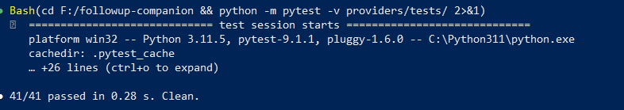

FollowUp Companion uses a multi-stage AI pipeline to turn routine discharge follow-up calls into a structured safety net — catching subtle risk signals that scripted IVR systems miss entirely.
Post-discharge readmission is a leading cause of preventable harm. Existing automated call systems are rigid, transactional, and completely blind to the nuanced distress signals patients actually express.
Scripted IVR trees force patients into yes/no answers, discarding free-text responses where real concerns live.
Euphemistic phrases (“I think I’m just a burden”, “I won’t be needing those refills”) evade keyword detectors but clearly indicate risk to a trained clinician.
When a patient mentions pain, standard scripts move on. Location, quality, and duration — the triage essentials — go uncollected.
Call outcomes are a binary checked/unchecked. There is no record of why a case was escalated or cleared, leaving clinicians with no context when reviewing flagged patients.
Each capability addresses a specific gap in the existing follow-up workflow, working in concert rather than as isolated modules.
Before every call, a CallPlanner agent reads the patient’s RAG-retrieved history to build a bespoke script — tone directives, priority questions, opening — injected live into the CALL-E conversation task. No two scripts are identical.
Transcripts pass through six arbitration dimensions in sequence: medication adherence, pain severity, emotional distress, acute risk, behavioural indicators, and sentinel phrases. Each dimension votes independently; a single high-confidence signal is sufficient to trigger escalation.
Uncertain signals (medium confidence) don’t auto-escalate. A ConfirmationGate re-reads the transcript with targeted follow-up probes, raising or lowering confidence before a final ACCEPT / TRIAGE_RISK verdict is issued. False positives are dramatically reduced.
Every verdict includes the dimension that fired, the evidence extracted, and the confidence chain. Clinicians reviewing flagged cases see exactly what the AI heard and why it escalated — not just a flag.
Each stage is independently testable and can fail gracefully without invalidating downstream results.
Two representative call transcripts — one routine, one flagged — showing how the system responds to different patient presentations.
The evaluation suite includes adversarial cases engineered to break the pipeline — confirming that safety boundaries hold, not just the happy path.
We deliberately construct transcripts where a high-risk phrase is
embedded in an otherwise benign call and confirm that the
risk_signal dimension fires regardless of surrounding context.
Mock-free testing where possible: the CALL-E client test suite patches at the SDK layer, not at the HTTP layer, so transport serialisation bugs are caught before they reach production.
An integration test runs the full Stage 0→Stage 1 path
against a mock CALL-E and asserts that PAIN probe questions
appear verbatim in the injected task string — guaranteeing
the live AI cannot skip symptom follow-up questions.

Every CALL-E request is issued with a deterministic idempotency key derived from patient ID, script ID, and scheduled time. Network retries never cause duplicate dials.